SNES - Como limpar um
cartucho
 :::.
Por Gigacom
- Dia de feira, cê vai todo feliz procurar alguma
coisa interessante , e acaba encontrando! O problema é que
normalmente cartuchinhos de feira são porcamente
conservados, o que nos obriga a fazer uma big fachina no cartuchinho
antes de espetá-lo no console. Abaixo, segue algumas dicas
de como realizar essa limpeza em um cartuchinho de SNES.
:::.
Por Gigacom
- Dia de feira, cê vai todo feliz procurar alguma
coisa interessante , e acaba encontrando! O problema é que
normalmente cartuchinhos de feira são porcamente
conservados, o que nos obriga a fazer uma big fachina no cartuchinho
antes de espetá-lo no console. Abaixo, segue algumas dicas
de como realizar essa limpeza em um cartuchinho de SNES.
_________________________________________________________________________________
De todos os cartuchos e jogos
que consegui, somente alguns poucos não me chagaram sujos ou
empoeirados (em geral, foram os cartuchos de amigos que me presentearam
que chegaram em bom estado). O resto... bem, Deus sabe o que
já tive que limpar ... Para esse artigo, selecionei um
cartuchinho que havia acabado de comprar numa feira, o Super Copa; eis
o coitado:
... Para esse artigo, selecionei um
cartuchinho que havia acabado de comprar numa feira, o Super Copa; eis
o coitado:
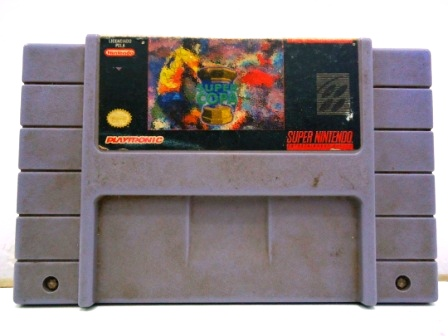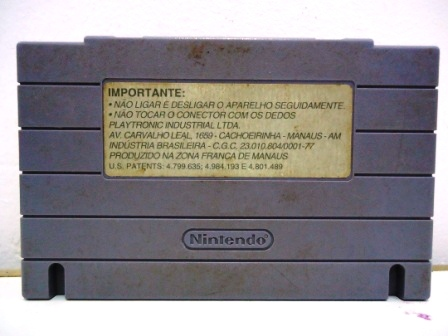
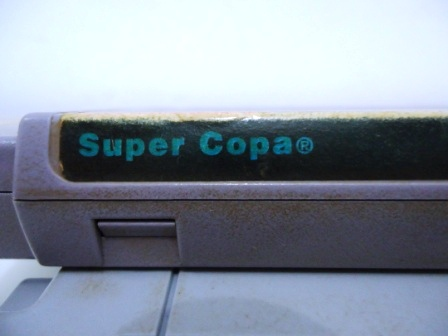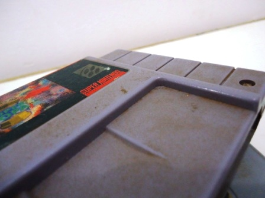
Não ha muito
misterio na limpeza de um cartucho, porém existem seus
detalhes. Cartuchos da Nintendo são porosos, acumulam poeira
e sujeira com o tempo, e para tirar essa sujeira só com
escova e sabão. O problema é que para uma limpeza
segura é preciso desmontar o cartucho, seprando o plastico
da plaquinha do cartucho. Porem quase tudo da Nintendo é
meio chato de se abrir. Os consoles todos (com excessão do
primeiro Nintendo) utilizam um tipo de parafuso especial que
só abre com a chave certa. Os cartuchos todos são
igualmente "lacrados" da mesma forma. A boa noticia é que
isso evitou os moleques curiosos da década de 90 abrirem e
fuderem com seus cartuchos, a má é que hoje esses
mesmos moleques (ou seja, nós mesmos) enfrentamos um baita
problema quando o assunto é fazer algum tipo de
manutenção ou limpeza nesses cartuchos... as
chaves para se abrir esses cartuchos podem ser adquiridas por um certo
valor em sites especializados, porém o tio Giga preza pelas
alternativas mais baratas ou que simplesmente não possuem
custo . Portanto, eis minha recomendação:
. Portanto, eis minha recomendação:
Pegue o alicate de unhas da sua esposa-namorada-irmã-mãe-avó-vizinha, e abra o cartucho! Sim meus caros, é possivel abrir um cartuchinho de Super Nintendo com um simples alicate de unha, usando a sua ponta para fazer pressão nos parafusos, e ir desenroscando com o cuidado de não deixar o alicate encostar nas beiradas do orificio.
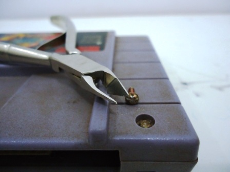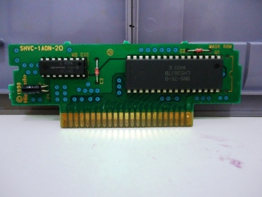
Com o cartucho aberto, e com a
plaquinha bem segura, chega a hora de limpar tudo. Particularmente, eu
uso uma tigelinha com água e detergente, uma escovinha e
bastante cuidado para limpar o cartucho sem molhar a label,
porém quase sempre ela acaba levando um banhinho tambem
hehehe , mas não chega a desgrudar. Molha um pouco, mas
depois que seca fica como antes.
, mas não chega a desgrudar. Molha um pouco, mas
depois que seca fica como antes.
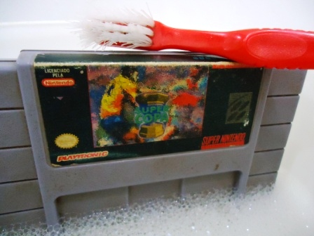
Uma ultima pose antes do banho
de espuma .
.
A escova é uma santa ferramenta na limpeza desses cartuchos. Como o cartucho é poroso e possui vários sulcos, assim como um formato meio quadradão com cavidades e tudo mais, a escova consegue limpar tudo muito bem e sem esforço. Se leva um tempinho escovando tudo, mas com cuidado e atenção a sujeira toda vai embora rapidinho.
A label dos cartuchos possuem uma pelicula de plastico super fina e transparente coladas nelas. Um pano umedecido com água e um pouquiiiiiiiiiinho de detergente conseguem tirar bastante sujeira sem fazer estrago algum, deixando em muitos casos a label tão brilhante quanto nova!
Com tudo desmontado, vale a pena tambem passar um paninho umedecido em alcool para limpar os contatos do cartucho. Normalmente eu faço isso com cotonetes toda vez que chega um cartucho novo em casa (limpo ao menos os contatos antes de abrir, somente para testar no video game). Mas quando se abre o cartucho as vezes dá pra notar que alguma sujeirinha permanece mesmo após o uso de cotonetes, então essa é uma boa hora para reforçar a limpeza.
Com tudo limpo, seque e confira se não ficou alguma sujerinha, não exite em usar a escova mais uma vez caso note alguma coisa. Quando você estiver certo de que está tudo uma belezura, remonte o cartucho.
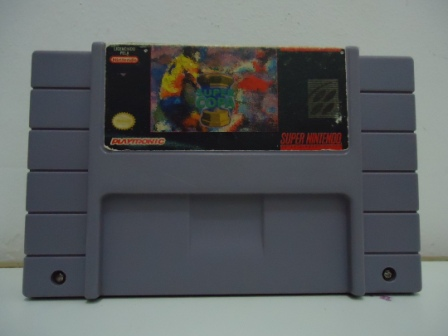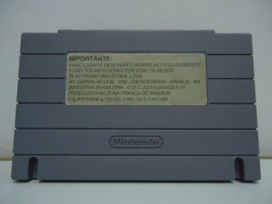
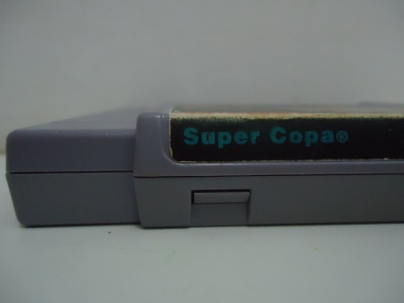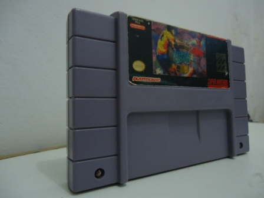
Prontinho! Depois de uma boa limpeza esse Super Copa ganhou seu merecido lugar ao lado dos outros cartuchos da minha coleção. Aproveite e faça o mesmo com os seus cartuchinhos de SNES.
Acesse o Trombone e comente sobre essa matéria!


Aqui, vou apresentar a restauração de um controle de SNES que comprei em péssimo estado numa feirinha da minha cidade, e que agora está lindinho funcionando perfeitamente. Confira as dicas, e faça uma restauração você também
Restaurando um controle de PSX
Peguei o mais feinho e judiado dos controles para fazer esse artigo. O coitado estava encardido na parte de cima, e debaixo dele encontrei arranhões nas partes de apoio da mão, e bastante sujeira acumulada nas inscrições. O conector do cabo estava muito arranhado e sujo tambem, o cabo então nem se fala... sujava a mão só de pegar